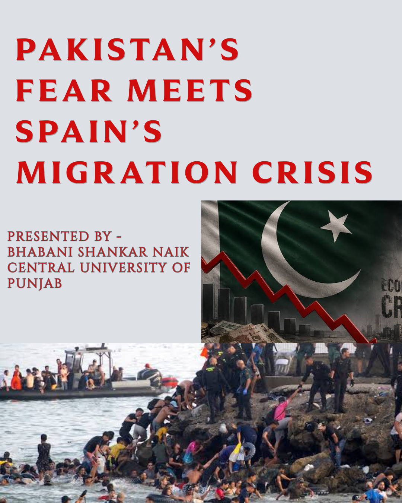
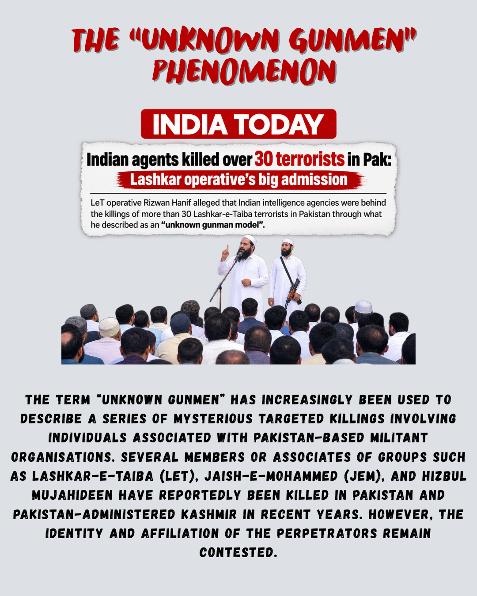
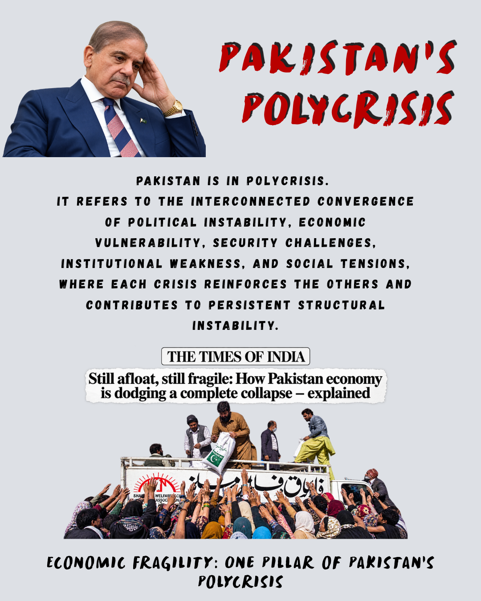
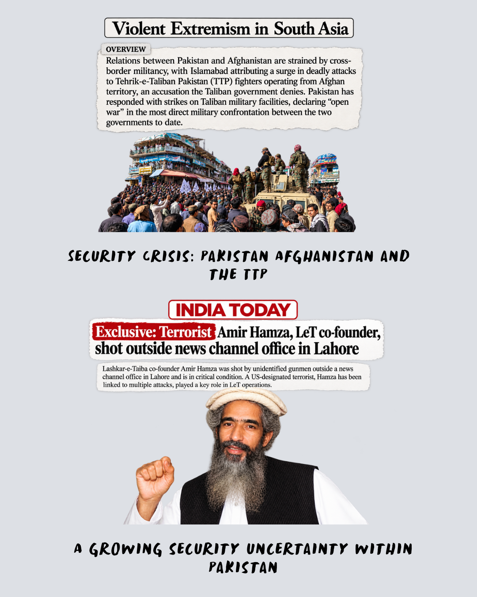
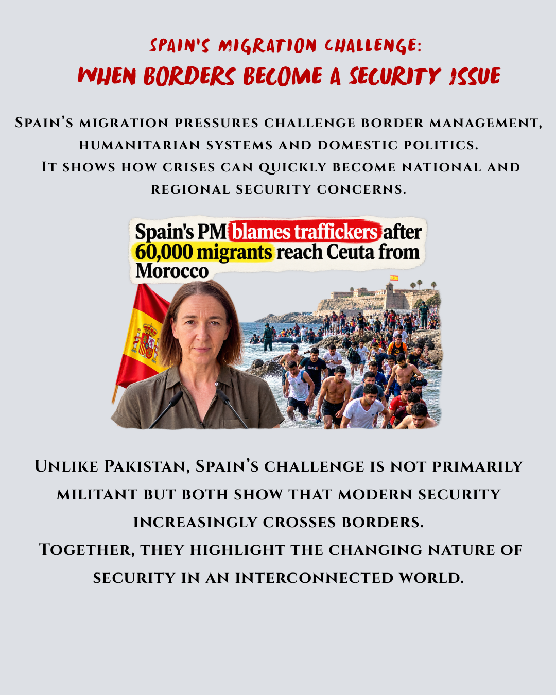
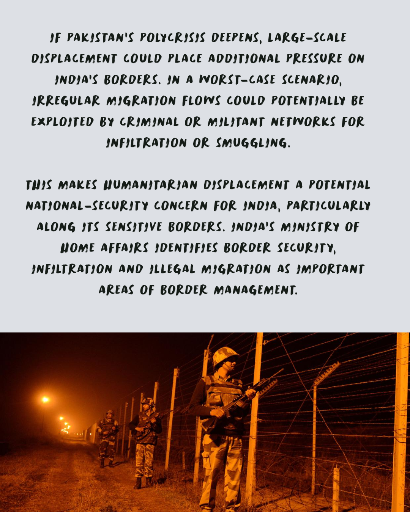

GEOPOLITICS · SOUTH ASIA
Pakistan's Polycrisis
An analysis of Pakistan's political, economic, social and security challenges and their wider regional implications.






An analysis of Pakistan's political, economic, social and security challenges and their wider regional implications.





